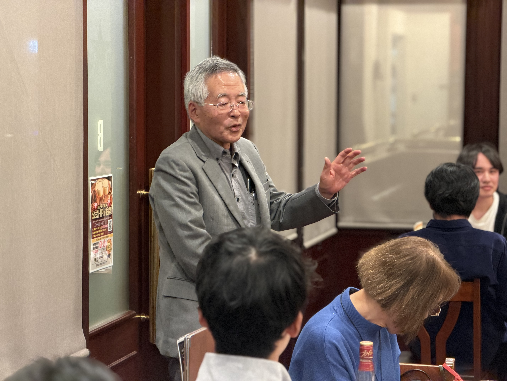
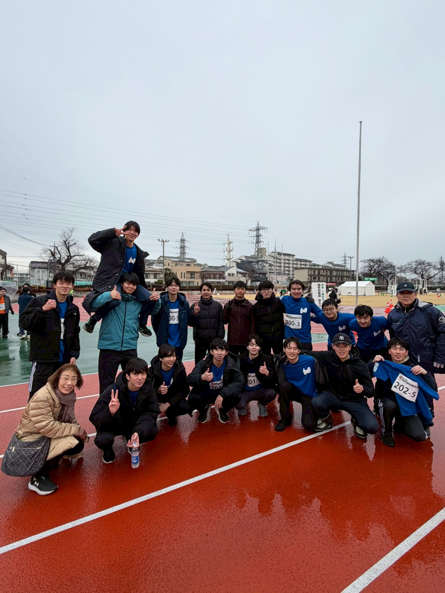
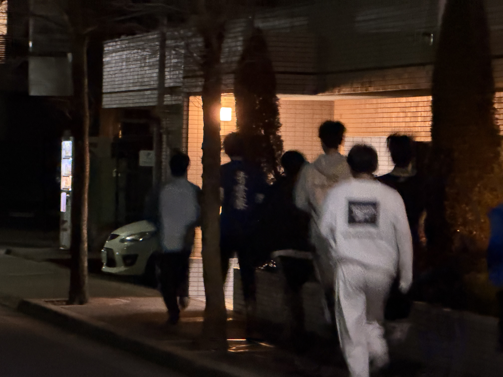
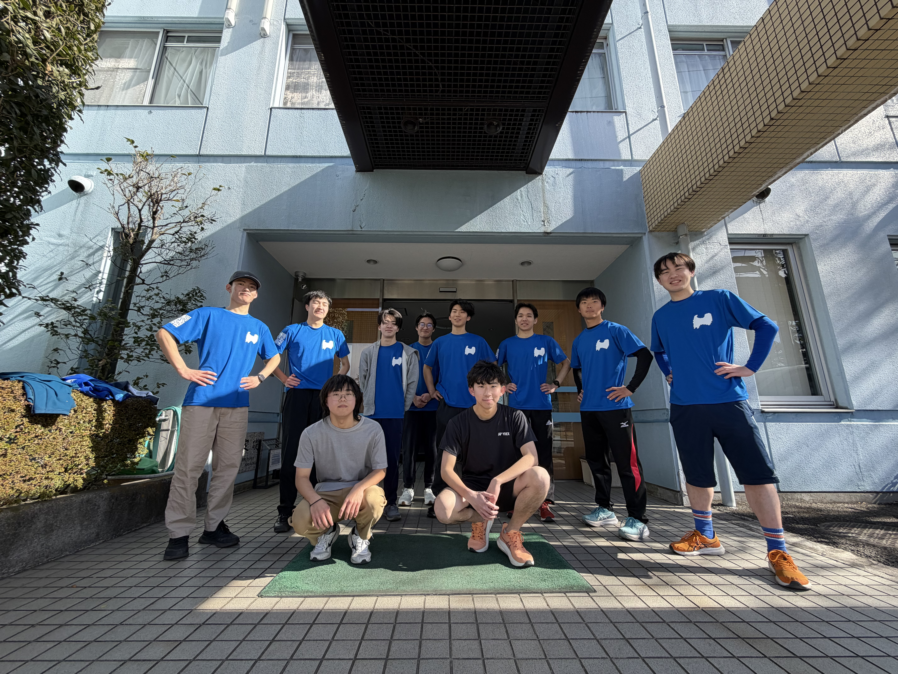
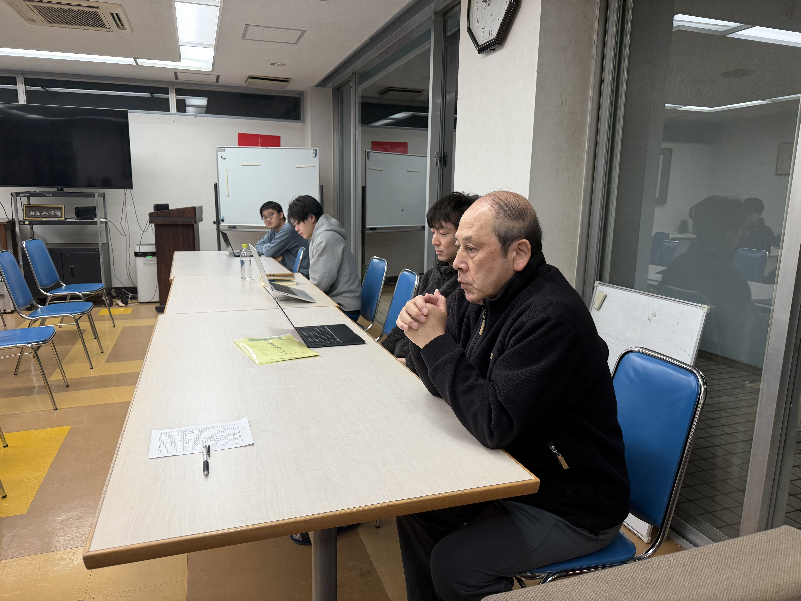

行事・イベント
入寮式、寮祭、歓迎会、祝賀会など、季節ごとの催しをまとめています。
入寮式、寮祭、歓迎会、祝賀会など、季節ごとの催しをまとめています。
寮生大会や誕生日会、日々の暮らしの風景を一覧できます。
卒寮生や青雲会との交流、節目の会合を記録しています。
県人会や地域行事など、寮の外とのつながりを紹介します。
府中駅伝や自主練習会など、体を動かす話題を集めています。
業界研究会や講演会など、進路と学びに関する記事です。
年ごとの記事一覧は 青雲寮だよりバックナンバー にまとめています。2026年、2025年、2024年以降の記事を年別に確認できます。
記事カードは news/data/backnumber.json を基準に生成します。JavaScript が使えない環境でも、直近の記事はこのまま読める構成にしています。
173件の記事

2月22日、銀座ライオン新宿エルタワー店にて卒寮生を祝う会を開催しました。OBも参加し、5名の卒寮生の門出を在寮生・OB一同で温かく祝いました。

府中駅伝に青雲寮が一般の部で4チーム出場。5℃の雨でも全チームが完走し、練習と声掛けで寮の一体感を深めた。

府中駅伝まで残り2週間となる中、寮生有志による夜間の自主練習会が行われました。急な呼びかけにも関わらず多くの寮生が集まり、大会に向けた意欲と団結力の高まりを感じる機会となりました。

2月11日に開催される府中駅伝に向け、府中の森公園で寮生10人が約2kmの合同練習を行いました。あわせて大会用オリジナルTシャツも作成し、本番当日は全員で着用して走ります。

1月の寮生大会を開催し、生活環境の整備や今後の予定について共有しました。寮生同士が協力し、より快適な寮生活を目指すための有意義な時間となりました。

令和4年度「20歳を祝う会」第1部の記念講演で、箱根駅伝中継の礎を築かれた坂田信久氏が語った挑戦と準備の哲学をレポートします。